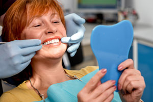

If you have lost several teeth and can’t chew and smile like you once did, we have options to help. We can replace all your teeth with a complete denture or make a partial denture that works with your existing teeth.
We can also incorporate dental implants into the denture design to help it stay in place, providing a more secure fit.
Denture Options
Complete Dentures
A full set of replacement teeth for the upper jaw, lower jaw or both, for patients who are missing all of their teeth in an arch.
Partial Dentures
A removable appliance that fills the gaps left by missing teeth and attaches to your remaining natural teeth. It also helps keep those teeth from shifting.
Implant-Retained (Snap-In) Dentures
Implants act as anchors so your denture “snaps” into place, improving stability and chewing. Learn about dental implants.
Fixed Hybrids
For patients who want teeth that don’t come out, a fixed hybrid screws onto implants and replaces all or most of the teeth in an arch.
Signs Dentures May Help
- You are missing several teeth or all teeth in an arch
- Chewing is difficult or painful
- Remaining teeth are badly decayed, loose or failing
- Your current denture is loose, uncomfortable or worn
Getting Your Dentures
Exam & planning
We evaluate your teeth, gums and bone and talk through your options.
Preparing your mouth
If needed, we remove failing teeth and smooth the bone with alveoloplasty so your denture fits better.
Impressions & bite
We record the shape of your mouth and how your jaws come together.
Try-in
You preview the fit, look and bite before the denture is finished.
Delivery & adjustments
We fit your new denture and make adjustments as you get used to it.
Adjusting to & Caring for Your Dentures
- Start with soft foods cut into small pieces, then work back to your usual diet.
- Practice speaking and reading aloud — your tongue and cheeks adapt quickly.
- Call us if you develop a sore spot; a simple adjustment usually helps.
- Clean your denture daily with a denture brush and keep it moist when it’s out of your mouth.
- Follow Dr. Holcombe’s instructions about removing your denture at night to let your gums rest.
- Keep regular checkups. Your mouth changes over time, and dentures may need relining or replacing.

Why Patients Choose Dr. Holcombe for Complete & Partial Dentures
- Doctor of Dental Medicine (DMD) from East Carolina University; undergraduate studies at North Carolina State University
- Active member of the American Dental Association, Academy of General Dentistry, North Carolina Dental Society and Buncombe County Dental Society
- A small, family-owned practice where you see the same dentist every visit, led by Dr. Holcombe since 2018
- Personal care and long-term relationships: we take the time to listen, answer questions and explain your options
Complete & Partial Dentures: Frequently Asked Questions
How long does it take to get used to new dentures?
Most people need a few weeks to feel comfortable eating and speaking with new dentures. Sore spots are common at first and can usually be fixed with a quick adjustment.
What is the difference between complete and partial dentures?
A complete denture replaces all the teeth in an arch. A partial denture replaces some missing teeth and attaches to your remaining natural teeth.
Should I sleep in my dentures?
Many patients are advised to remove dentures at night to let the gums rest and to keep the denture clean. Dr. Holcombe will give you instructions for your specific denture.
Will my dentures need to be replaced?
Over time the gums and bone under a denture change shape, so dentures may need to be relined or remade to keep a good fit. Regular checkups help us catch this early.
How can implants make my denture more secure?
Implants placed in the jaw can act as attachments that hold your denture firmly in place. See our dental implants page for details.